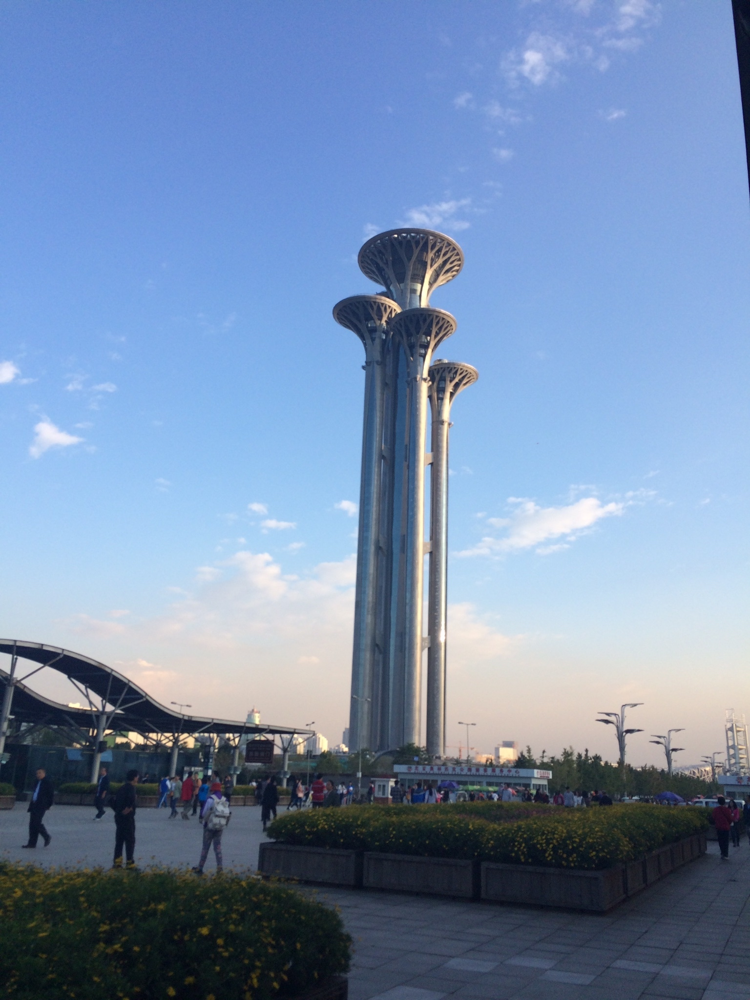

今天下午和刘兄一起聊了很久，他说我已经很久没有写博客了，第一个的确是自己比较忙，第二个是因为自己的状态并不太好，不想表达出来，第三个是大多数人都对我买椟还珠，逐渐就丧失了写的乐趣了，但是,AnyWay,保持思考是个好习惯，主要是忍不住的时候也想装下逼，于是便想着再来写一篇。
然后回来仔细看了下自己既往以来写过的博文，于是就会想，既然我有写过『总想变得更好』，就应该践行自己的承诺，从目前来说，我做的还远远不够，总的来说，我是没有资格宣扬自己『总想变的更好』这句话的，因为我是个没有节操的人，我根本没有坚持过自己的信念。。。。我也有想过没有意念，我该怎么办，似乎问题也总是没有答案， 后来想明白了，该吃吃，该喝喝，想做什么就立马去做，没有必要想太多给自己压太多想做却做不来的事情，于是反而觉得挺不错的。
现在即使离开的想法每半年就会冒出一次，我一直都在努力克服，每一次我压制住了自己莫名其妙荒诞的想法以后，感觉自己又学到了很多东西。我终于做到了在情绪极其不稳定的情况下，控制住了自己的行为，于是就到了现在的状态，我知道我的目标在哪，什么时间点应该做什么事情，什么时间点不应该做什么事情，觉得很开心，然后不会慌乱，也不会恐惧，只需要努力去做，事情一定会成功，Everything 都会是 under control的。用来判断现在的状态就是：现在的我就不会离去，除非我确定我可以离去，逻辑很简单，适合我这种笨人
我非常喜欢和有意思的人聊天，觉得这是我探索世界的另外一种方式——借用别人的眼睛来看这个世界。当然，也有可能是别人觉得我这个人的脾气不太好，但说句实话，我只是不太关心我不关心的人是怎么想的而已。其实大多数人都是这样吧，如果有人觉得受到了伤害，我只能对你脆弱的自尊心感到遗憾，同时，我也不知道说实话是不是一件很好的事情。
这段时间我又想明白一个很残酷的事实，一切因为愚蠢和懒惰而造成自己命运凄惨的人，都不值得同情，大家都是成年人，在独自面对困境的时候，厮杀还是逃避，每个都需要做出自己的决定，并承担决定的后果，最后，买单。